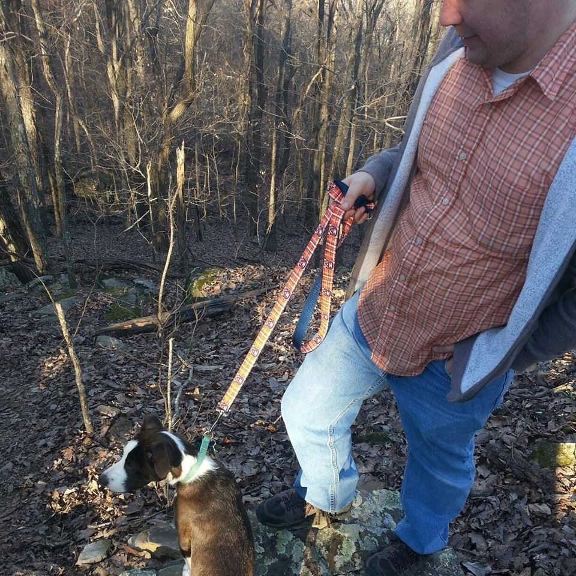

Who am I?

My name is Phillip Clontz, and I’m a software engineer at Northrop Grumman in Huntsville, Alabama. Outside of work, I spend my time raising my wonderful son, Benjamin. I also work on pet projects, which I’ll add pages for here.
My Story
I was born and raised in Huntsville, Alabama. At Buckhorn High School in Madison County, I got my first real exposure to programming in an intro C++ class. Throughout high school, I experimented with C++, Java, and BASIC, and built several games using GameMaker and RPG Maker.After graduating, I attended the University of Alabama in Huntsville, majoring in Mathematics while also completing the education curriculum for secondary teaching. At UAH, I expanded my programming skills through additional coursework.
Following college, I taught Calculus for three years before transitioning to software engineering. I started at SAIC as a software engineer on an http://ASP.NET MVC web application. After 18 months, I moved to a related http://ASP.NET WPF project, where I helped design a large modular system. Since joining Northrop Grumman, I’ve been developing in LabVIEW leading a growing team of developers as the software lead and Agile coach.